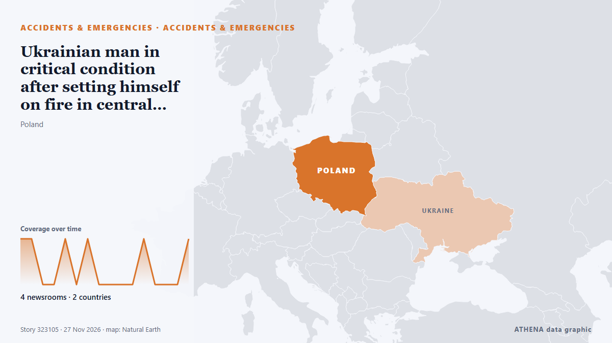

Accidents & emergencies
SponsoredPresented by  Cybernetics and Artificial Intelligence Lab Welcome to the Cybernetics and Artificial Intelligence Laboratory, established at the Department of Business Administration of the National and Kapodistrian University of Athens. The lab is headed by Professor Dimitrios Thomakos. The lab aims to do research that can be published in top venues. Our research uses tools and methods of Artificial Intelligence, and lies in the following areas: - Forecasting - Decision making - Cyber security - Finance We are always looking forward to collaborating with exceptional students!
Cybernetics and Artificial Intelligence Lab Welcome to the Cybernetics and Artificial Intelligence Laboratory, established at the Department of Business Administration of the National and Kapodistrian University of Athens. The lab is headed by Professor Dimitrios Thomakos. The lab aims to do research that can be published in top venues. Our research uses tools and methods of Artificial Intelligence, and lies in the following areas: - Forecasting - Decision making - Cyber security - Finance We are always looking forward to collaborating with exceptional students!
| 14 Nov | 0 |
|---|---|
| 15 Nov | 0 |
| 16 Nov | 0 |
| 17 Nov | 0 |
| 18 Nov | 0 |
| 19 Nov | 0 |
| 20 Nov | 0 |
| 21 Nov | 1 |
| 22 Nov | 0 |
| 23 Nov | 1 |
| 24 Nov | 5 |
| 25 Nov | 8 |
| 26 Nov | 8 |
| 27 Nov | 1 |

Ukrainian man in critical condition after setting himself on fire in central Warsaw
The man received emergency medical assistance and was taken to the hospital with severe burns. from Kyiv Independent
Tinubu approves houses, N100m each for families of NAF crash victims
President Bola Tinubu says he has approved three-bedroom flats situated in Abuja to be given to the families of the 25 people who died in the Nigeria Airforce aircraft crash in Igbokoda, Ondo State. from Daily Trust
Egypt detains a driver suspected of causing Cairo tanker crash that killed 31
Egyptian authorities have detained a driver suspected of causing a fuel tanker to overturn on a major highway in Cairo. from ABC News (International)
High-quality medieval armor discovered in shipwreck that sank in 1495
The ship, known as "Griffin" or "Gribshunden," was the warship of Denmark's 15th-century leader King Hans. from CBS News (World)
A year after Hong Kong's deadliest fire in decades, authorities are wary of memorials
The Wang Fuk Court fire was the world's deadliest residential blaze since 1980. from SBS News
Uganda: 10 Dead As Truck Plunges Into River in Zombo
[Nile Post] At least 10 people have been confirmed dead and four others seriously injured after a truck carrying cassava flour and passengers lost control and plunged into River Nyagak in Zombo… from AllAfrica
Sindh suspends SBCA chief, other officials over 'negligence' in Karachi building collapse
Rescue personnel and volunteers search for victims in the rubble of the collapsed under-construction building in Karachi on November 25, 2026. — AFPDC East Nasrullah Abbasi and SSP Zubair Sheikh… from Geo News (English)
A year after Hong Kong's deadly fire, survivors struggle with loss and lingering sense of injustice
Even as life kept pushing them forward, some Wang Fuk Court fire survivors say justice has yet to be served. from CNA (Channel NewsAsia)
31 killed in fire after vehicle overturns in Egypt - UPDATED
A vehicle carrying petroleum products overturned and caught fire on a major ring road in Cairo. from The Straits Times
Flinders Island sergeant shot on duty 'still has long way to go', family says
The brother of a police officer shot while on duty on Flinders Island says he is humbled by the community support shown to his family. from ABC News Australia
At least 31 dead after fuel tanker fire in Egypt
Thirty-one people were killed and 21 wounded in a fire after a vehicle carrying petroleum products overturned on a major ring road in Egypt, authorities said on Wednesday. from CBC News (alternative feed)
Plane crash off the coast of Mississippi kills 6, including 2 children
WASHINGTON, Nov 25, (AP): A small plane crashed Tuesday off the coast of Mississippi, killing the six people, including two children, on board, according to the U.S. from Arab Times
Türkiye mourns 5 soldiers killed in military helicopter crash
Türkiye is mourning five soldiers killed when a military helicopter crashed during a training flight in the central province of Eskişehir, with condolences delivered to their famil... from Daily Sabah
Bristol City 1-1 Wrexham recap: Reaction after Cam Pring fires Robins to draw at Ashton Gate
Live updates from Ashton Gate, where Michael Skubala and Bristol City host Wrexham in the Championship (7:45pm kick-off) from Bristol Post
Ras Al Khaimah bus-truck collision kills 13, injures 14
Two more passengers die in hospital following early-morning crash; Indian nationals among the victims. from News of Bahrain
Hanoi gas explosion kills 6, injures 10
Six people were killed and 10 others injured in a gas explosion at a food shop on Nguyen Van Tuyet Street in Hanoi on Tuesday, prompting authorities to evacuate nearby residents and launch an… from Tuoi Tre News
Lagos Tightens Fire Safety Regulations to Protect Business Investments
The Lagos State Government is strengthening fire safety regulations and expanding emergency response infrastructure to protect business investments, reduce property losses and minimise disruptions to… from ThisDay (Nigeria)
PM Shah calls for zero tolerance against gender-based violence
Key Takeaways: PM Balendra Shah called for zero tolerance against gender-based violence He emphasized protecting survivors, ensuring justice and ending impunity The prime minis... from The Himalayan Times
Southern Motorway crash between Takanini and Papakura leaves one person critical
Two southbound lanes are blocked and delays are expected. from New Zealand Herald